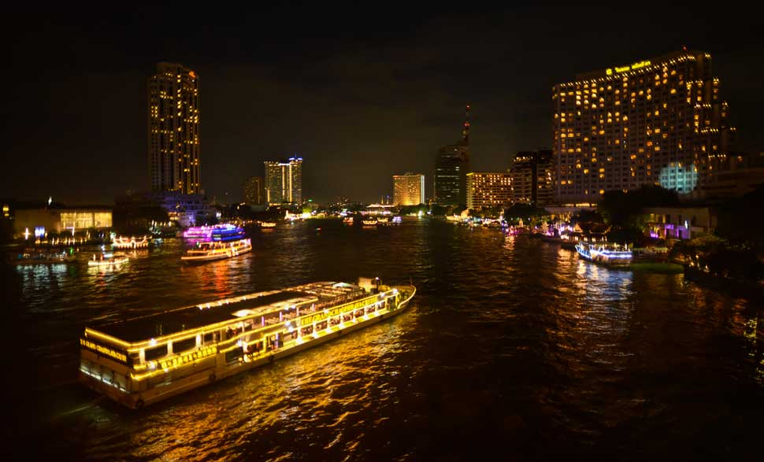

Blending Asian heritage with contemporary sophistication, South-East Asia is a haven of
elegance, home to rolling
green vistas and stunning panoramic ocean views. Get ready to behold the magnificence of South-East Asia in
three blockbuster power-packed itineraries!
1.Super saver Bali,Pattaya & Bangkok

Price: INR 77,209* per person
Duration: 8 Nights
Swipe in a delightful 8 nights’ stay in 2 countries with this package. Kick-start with the beach haven of
Bali
where you can enjoy a quintessential South-East Asia trek amid lush green rice fields, charming huts and
sprawling villas with CAMPUHAN RIDGE WALK. Embark on a half-day private guided tour of Ubud Arts and Crafts,
or
relish the colourful aquatic ecosystem and swim beside turtles with the exciting water sports. Conclude the
day
with a sensual Balinese flower foot spa at Villa Jerami Spa!
Oh! You can also sign up for a short and sweet two-hour tour of Pattaya, crafted to delight your senses with
the
coral-ful aquatic life and an added kick of a spicy Indian Lunch! You may also throw in an adventure park
tour
to spice up your itinerary.
How about romanticizing Bangkok on the Chao Phaya Dinner Cruise? Or, would you prefer a romantic dinner at
Bangkok Sky Restaurant? Our tailor-made package is perfect to indulge in a 360-degree fun of South-East
Asia.
#MMTTopThings2Do
Book Your Package